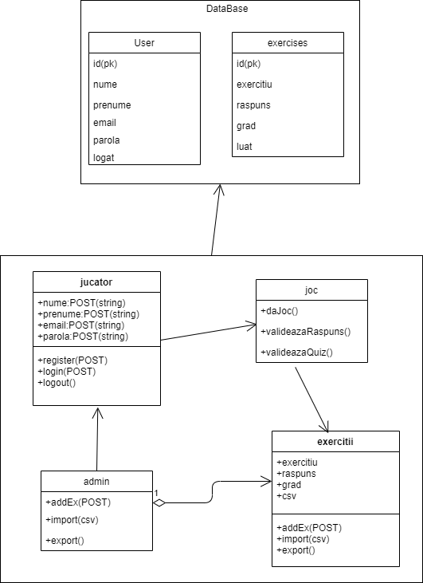

MEGa - Math Equation Game
Abstract
MEGa - Math Equation Game este un joc de matematică cu scop educativ, care ajută utilizatorii să învețe matematica într-un mod ludic.
1. Introducere
1.1 Notă document
Documentarea proiectului: MEGa-Math-Equation-Game, un joc ce ajută utilizatorii să învețe matematica într-un mod distractiv. Documentul este creat după un template IEEE-SRS-Template și are scop informativ.
1.2 Scopul jocului
Site-ul se încadrează în domeniul matematic, el furnizează atât teoria legată de matematica primară, cât și exerciții matematice din domeniile aritmeticii, precum adunări, scăderi, îmnulțiri și împărțiri.
MEGa-Math-Equation-Game este un joc web creat cu scopul de a ajuta elevii din clasele primare să învețe matematică.
2. Descriere de ansamblu
2.1 Functionalitățile jocului
Aplicația pune la dispoziție utilizatorului diverse funcții, precum crearea unui cont și folosirea lui pentru jocuri bonus, logarea în aplicație, modificarea setărilor jocului și jocurile propriu-zise, care pot fi accesate de un utilizator atât logat, cât și nelogat.
2.2 Clase de utilizatori și caracteristici
Jocul este construit în așa fel încât utilizatorii, copii cu vârste între 5 și 10 ani, să fie atrași de interfața jucăușă, viu colorată, cu tematica matematică.
Utilizatorii se împart în două categorii: cei fără cont, nelogați, și cei care au cont în aplicatie, logați.
2.3 Mediul de Operare
Aplicația este concepută pentru a putea fi accesată de pe orice dispozitiv care dispune de un browser web și de o conexiune la internet.
2.4 Constrângeri de proiectare și implementare
Site-ul impune anumite constrângeri: atunci când site-ul este accesat de pe un telefon sau o tabletă, utilizatorul este obligat să folosească dispozitivul pe orizontală.
2.5 Documentația utilizatorului
Utilizatorul dispune de o pagină de informații despre jocuri. Această pagină descrie utilizarea fiecărui joc în parte.
2.6 Ipoteze și dependențe
Ipotetic vorbind, site-ul se bazează pe o interacțiune server client, în care clientul, utilizatorul, face o cerere din browser, prin interfața web a jocului, către server, care este site-ul jocului.
Principalele răspunsuri la cererea clientului sunt accesate dintr-o bază de date, care conține informații despre client și exercițiile furnizate, stocate, în funcție de gradul de dificultate.
3. Descriere Interfață
3.1 Design
Jocul este conceput pentru copii cu vârste între 5 și 10 ani, de aceea design-ul site-ului este destinat copiilor. Culorile folosite sunt îmbinate cu un background închis, pentru a le accentua.
Pentru background am folosit culoarea violet, fiind o culoare asociată cu ambiția și puterea. Este o culoare care tinde să fie aleasă de persoanele inteligente, de aceea am selectat-o pentru jocul de matematică.
Butoanele sunt viu colorate, cu tente fosforescente, pentru a ieși în evidență pe background-ul închis. Ele conțin și imagini, pentru a fi cât mai sugestive copiilor. Site-ul atrage atenția prin animalele inserate pentru design, deoarece animalele atrag copiii.
Jocurile propriu-zise au un background turcoaz, pentru a accentua jocul și nimic alceva. Folosirea timer-ului pune jucătorul să gândească sub presiune, învațându-l să lucreze cât mai rapid.
Design-ul se poate observa mai în detaliu pe pagina: MEGa
3.2 Tehnologii utilizate
3.3 Caracteristici interfață
3.3.1 Descriere generală
-
Pagina principală - Home: conține 4 butoane pentru accesarea paginilor, asemănătoare unui meniu: Login, Register, Games, Settings.
-
Paginile contului - Login, Register: sunt destinate pentru logarea utilizatorului și crearea unui cont nou.
-
Pagina jocurilor - Games: conține o pagină de învățare a teoriei, o pagina unde să rezolve exercițiile (în care primește random ecuații de calcul), iar pentru utilizatorii logați un test de inteligență matematică.
-
Pagina setărilor - Settings: conține setări asupra sunetului, a muzicii, a nickname-lui, schimbării parolei și o secțiune de informații referitoare la jocuri.
-
Pagina adminului - Admin: conține un formular ce oferă posibiliatea de a insera exerciții în baza de date și modalitatea de a face import/export bazei de date.
3.3.2 Descriere functionalități
-
Funcția Creare cont
Site-ul web pune la dispoziție o pagină pentru crearea unui cont. Contul se creează pe baza unui formular și se validează prin email, cei care dețin un cont beneaficiază de un joc bonus.
-
Funcția de logare
Pagina de logare se adresează utilizatorilor care dețin deja un cont. În urma logării, aceștia beneficiază de un joc în care pot introduce ecuații, urmând ca acestea să fie rezolvate și salvate. În cazul în care parola este uitată, utilizatorul poate folosi funcția de schimbare a parolei.
-
Utilizarea setărilor
În această pagină, utilizatorul poate găsi informații despre joc și un buton de schimbare a parolei.
-
Functionalitățile jocurilor
Exercițiile propriu-zise sunt date random după ce se rezolvă un exercițiu. Dacă exercițiul este corect scorul crește. Fiecare exercițiu are un timp standard de rezolvare. Odată ce timpul s-a terminat, utilizatorului i se va scădea scorul și va primi exercițiul următor.
Testul de inteligență este destinat celor ce sunt logați. Quiz game este un test de inteligență matematică și conține 10 întrebări, care sunt evaluate după submit. În funcție de rezultat se oferă "sfaturi" pentru îmbunătățirea abilităților matematice.
-
Interfața software
Aplicația comunică cu o baza de date PostgreSQL, din care extragem/inserăm informațiile de care avem nevoie.
4. Caracteristci ale sistemului
4.1 Generarea de exerciții
Jucătorul primește un exercițiu pe care trebuie să îl rezolve într-un timp limitat, fiind cronometrat de timer-ul jocului.
Jucătorul primește următorul exercițiu atunci când trimite un răspuns sau când timpul s-a terminat.
Jucătorul tastează răspunsul gândit, după care va primi un scor ce îi va arăta numărul de întrebări corecte la care a răspuns.
4.2 Descriere funcționalități backend
Register
Pentru funcția de înregistrare folosim un formular în HTML pentru a prelua datele utilizatorului si a le modela în PHP. Apoi în PHP deschidem o conexiune în baza de date, extragem datele din formular, creează un querry și le completează în baza de date, apoi răspunde clientului.
Login
Pentru funcția de logare folosim un formular în HTML pentru a prelua datele utilizatorului, apoi verificăm dacă utilizatorul se află în baza de date și deschidem o sesiune. Tot aici verificăm dacă utilizatorul este admin și îi dăm drept de admin. De-a lungul sesiunii facem funcția de delogare și accesăm testul de inteligență.
Funcțiile adminului
Adminul are propria sa interfață de unde poate exercita comenzi asupra bazei de date: adăugare exercițiu nou, export tabelă și import csv.
Implementarea jocului
Pentru afișarea jocurilor în consolă ne folosim de un apel AJAX, funcția php apelată primește ca parametru un JSON ce conține gradul setat de utilizator și returnează un joc random din baza de date în funcție de grad.
Verificarea răspunsului
Pentru validarea răspunsului ne folosim tot de AJAX unde apelăm un PHP cu un JSON care conține jocul curent, răspunsul jucătorului și scorul la momentul curent. În PHP vom parsa JSON-ul și vom extrage cele 3 variabile. După vom exrage răspunsul corect din baza de date. Dacă răspunsul extras coincide cu răspunsul primit ca input incrementăm scorul, altfel nu. În final este returnat scorul care va fi afișat în consolă.
Quiz game
Quiz-ul reprezintă un test de inteligență matematică. Este creat într-un formular, iar răspunsul este trimis în PHP pentru validare. PHP-ul în urma validării, în funcție de reziltat apelează pagina pentru quiz promovat sau quiz nepromovat, pagini ce vor oferi sfaturi utilizatorului.
4. Sarcini
- Avram Adina Valentina: Pagina Login, Pagina Info
- Oceanu Iulia: Pagina Home, Pagina Games
- Pohoață Alexandra Elena: Pagina Register, Pagina Settings, Pagina ChangePassword
- Avram Adina Valentina & Oceanu Iulia: Pagina Learn, Pagina Game1, Pagina Game2, Pagina Game3, Pagina Game4, Pagina Game5
- Avram Adina Valentina & Oceanu Iulia & Pohoață Alexandra Elena: Documentație
- Avram Adina Valentina & Oceanu Iulia & Pohoață Alexandra Elena: partea backend